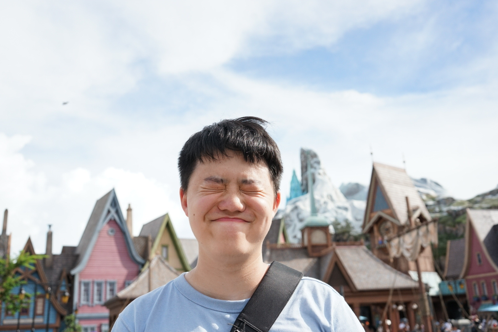

Hello, I'm
Electrical & computer engineering student at the University of Washington. I design circuits, train models, and build things that bridge hardware and software.

I'm an Electrical & Computer Engineering student at the University of Washington with minors in Data Science and Informatics. My work spans the full stack of engineering — from designing PCBs and programming microcontrollers to training custom language models and building cloud infrastructure.
At the SEAL Lab, I coordinate research and development initiatives, manage DevOps infrastructure supporting ~120 researchers, and am currently training and deploying three custom LLMs for lab-specific workflows. This summer, I'll be joining the MINSys Lab at the Hong Kong University of Science and Technology (HKUST), working on mobile, intelligent, and networked systems.
Before engineering, I was a licensed Emergency Medical Responder with Community First Responders, holding full EMALB Schedule 2 endorsements. Over three years I treated more than 150 patients and supervised first response teams at large-scale events. That experience taught me how to stay calm under pressure, communicate with clarity, and make decisions when the stakes are real.
A dedicated follower of the sport — currently supporting Mercedes and Ferrari, as well as Max Verstappen. Race weekends are sacred.
A latte with a Wilton Benitez blend from Colombia is as close to perfect as it gets. Always exploring new roasters and always open to recommendations.
Something about well-designed transit is deeply satisfying. Favourites include Link Light Rail in Seattle, Hong Kong's MTR, Tokyo Metro, JR, and Vancouver's SkyTrain.
Currently shooting on a Sony A7II paired with a Sigma 30mm f/1.4 Contemporary. Mostly street and travel photography.
Browse my projects, filtered by technology or keyword.
Everything I've worked on. Use the search bar to filter by keyword or technology.
Try a different keyword or clear the search.
The tools, hardware, and software that power my day-to-day. Inspired by uses.tech.
No one builds anything alone. These are the people who believed in me, challenged me, and shaped who I am today.